Adición y sustracción de radicales
Radicales Semejantes
Dos radicales son semejantes cuando tienen igual índice y el mismo radicando.
Ejemplo:
- Radicales semejantes
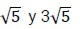
- Radicales no semejantes:
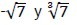
Suma y resta de radicales
Solo es posible sumar o restar términos que contienen radicales semejantes.
Para sumar o restar radicales semejantes extraemos factor común del radical semejante y después realizamos la suma algebraica.
Ejemplos:
En nuestro problema para calcular las dimensiones de la torre con 6 cubos teníamos:
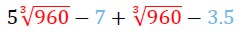
Si queremos hacer la suma de esta expresión sumamos los irracionales semejantes
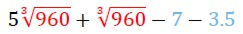
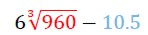
Este resultado es la respuesta exacta a la suma, si resolvemos esto en la calculadora obtenemos una aproximación.
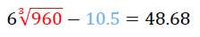
Existen casos en los cuales ciertos radicales son semejantes luego de llevarlos a su mínima expresión.
Si los radicales no son semejantes, se deben extraer factores fuera de radical, para obtener radicales semejantes.
Ejemplos:
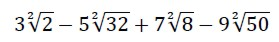
Factoreamos los radicandos y los expresamos como potencias
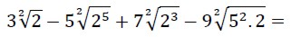
Reescribimos estas potencias para poder simplificar y aplicamos la propiedad distributiva de la raíz con respecto al producto
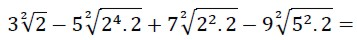
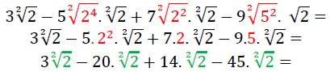
Obtuvimos términos semejantes por lo que procedemos a realizar las sumas y las restas:

En el siguiente ejemplo vemos como operar cuando tenemos diferentes radicales semejantes
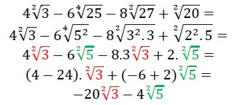

En este video podrás ver un ejemplo de cómo resolver la suma de radicales:
Obra publicada con Licencia Creative Commons Reconocimiento Compartir igual 4.0